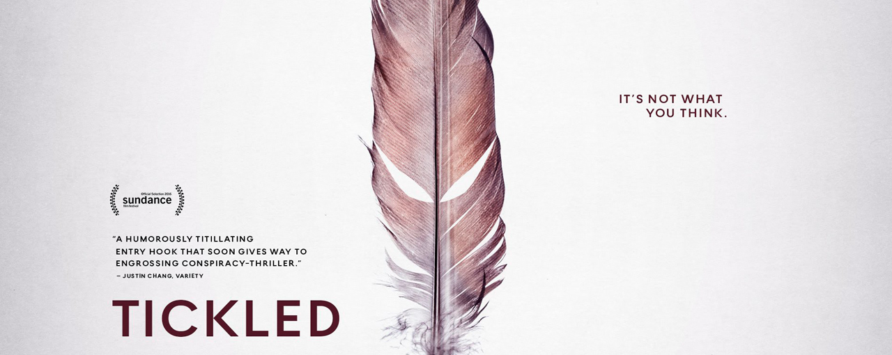

Ticked
Journalist David Farrier stumbles upon a mysterious tickling competition online. As he delves deeper he comes up against fierce resistance, but that doesnt stop him getting to the bottom of a story stranger than fiction.
Journalist David Farrier stumbles upon a mysterious tickling competition online. As he delves deeper he comes up against fierce resistance, but that doesnt stop him getting to the bottom of a story stranger than fiction.
A look at the events leading up to the Taliban's attack on Pakistani schoolgirl, Malala Yousafzai, for speaking out on girls' education followed by the aftermath, including her speech to the United Nations.
Gennadiy calls himself "Pastor Crocodile." He's known throughout Ukraine for his years working to rehabilitate drug-addicted kids. But he's also a vigilante who uses any force necessary to carry out his moral vision.